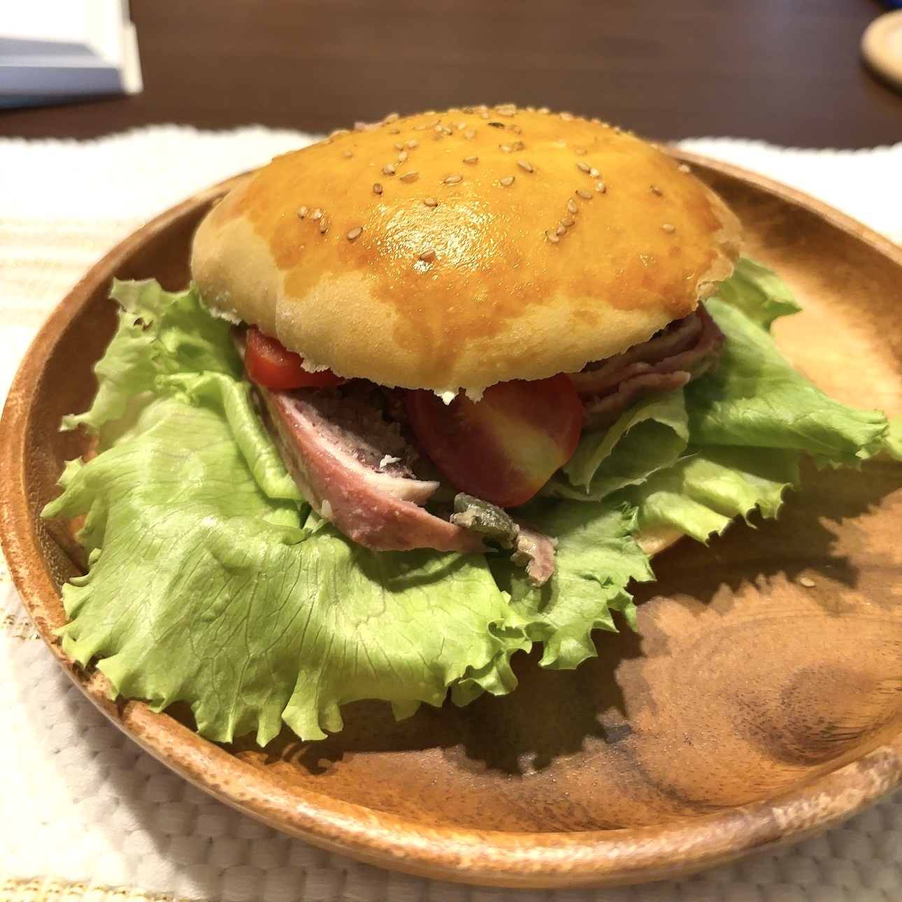
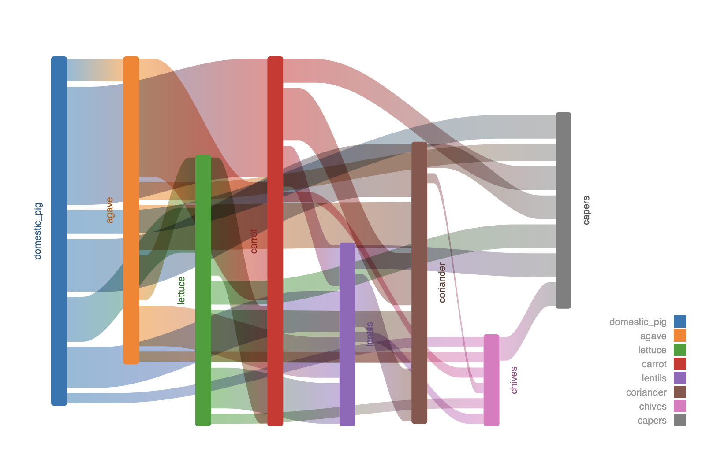

Mari Murotani
👩💻 自己紹介
料理が好きでペアリングツールを自作して、ペアリング理論を元にしたレシピを考えています！
とっても美味しいレシピがたくさんあるので、気になる方はお声がけください！


昔の撮影した画像の自動補正も取り組んでいます。
→→→→
🔧 技術スタック
- RubyOnRails / MySQL / VueJS
- Python / OpenCV / FastAPI
- AWS / MySQL / Neo4j / XGBoost / Tensorflow少々
- 遠い昔にPHP,VisualStudio(C#), JavaScript, HTML, CSS(SCSS,SASS)
- オンプレ時代のインフラひととおり(since Redhat 7, any server application including Apache, Nginx, MySQL, Redis, MongoDB, fluentd etc.)
📂 プロジェクト